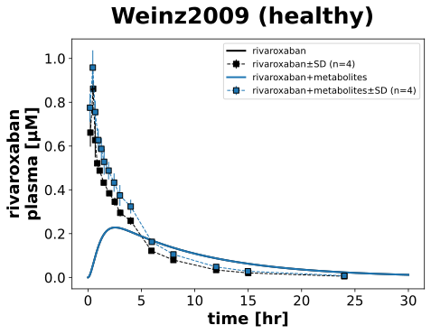

|  |
../../../../experiments/studies/weinz2009.py
from typing import Dict
from sbmlsim.data import DataSet, load_pkdb_dataframe
from sbmlsim.fit import FitMapping, FitData
from sbmlutils.console import console
from pkdb_models.models.rivaroxaban.experiments.base_experiment import (
RivaroxabanSimulationExperiment,
)
from pkdb_models.models.rivaroxaban.experiments.metadata import (
Tissue, Route, Dosing, ApplicationForm, Health,
Fasting, RivaroxabanMappingMetaData, Coadministration
)
from sbmlsim.plot import Axis, Figure
from sbmlsim.simulation import Timecourse, TimecourseSim
from pkdb_models.models.rivaroxaban.helpers import run_experiments
class Weinz2009(RivaroxabanSimulationExperiment):
"""Simulation experiment of Weinz2009."""
# single dose in four healthy male subjects
formulation = "T10"
color = {
"rivaroxaban": "black",
"rivaroxaban+metabolites": "tab:blue"
}
info_dict = {
"rivaroxaban": "[Cve_riv]",
"rivaroxaban+metabolites": "[Cve_riv_rx]",
}
def datasets(self) -> Dict[str, DataSet]:
dsets = {}
fig_id = "Fig2"
# FIXME: urinary and feces data
df = load_pkdb_dataframe(f"{self.sid}_{fig_id}", data_path=self.data_path)
for label, df_label in df.groupby("label"):
dset = DataSet.from_df(df_label, self.ureg)
dset.unit_conversion("mean", 1 / self.Mr.riv)
dsets[label] = dset
return dsets
def simulations(self) -> Dict[str, TimecourseSim]:
Q_ = self.Q_
tcsims = {}
tcsims[f"po_{self.formulation}"] = TimecourseSim([
Timecourse(
start=0,
end=30 * 60, # [min]
steps=500,
changes={
**self.default_changes(),
# FIXME: bodyweights
"PODOSE_riv": Q_(10, "mg"),
},
)
])
return tcsims
def fit_mappings(self) -> Dict[str, FitMapping]:
mappings = {}
for name, sid in self.info_dict.items():
mappings[f"fm_po_{name}"] = FitMapping(
self,
reference=FitData(
self,
dataset=f"{name}_{self.formulation}",
xid="time",
yid="mean",
yid_sd="mean_sd",
count="count",
),
observable=FitData(
self, task=f"task_po_{self.formulation}", xid="time", yid=sid,
),
metadata=RivaroxabanMappingMetaData(
tissue=Tissue.PLASMA,
route=Route.PO,
application_form=ApplicationForm.SOLUTION,
dosing=Dosing.SINGLE,
health=Health.HEALTHY,
fasting=Fasting.FASTED,
coadministration=Coadministration.NONE,
),
)
return mappings
def figures(self) -> Dict[str, Figure]:
fig = Figure(
experiment=self,
sid="Fig1",
name=f"{self.__class__.__name__} (healthy)",
)
plots = fig.create_plots(
xaxis=Axis(self.label_time, unit=self.unit_time), legend=True
)
plots[0].set_yaxis(self.label_riv_plasma, unit=self.unit_riv)
for name, sid in self.info_dict.items():
# simulation
plots[0].add_data(
task=f"task_po_{self.formulation}",
xid="time",
yid=sid,
label=name,
color=self.color[name],
)
# data
plots[0].add_data(
dataset=f"{name}_{self.formulation}",
xid="time",
yid="mean",
yid_sd="mean_sd",
count="count",
label=name,
color=self.color[name],
)
return {fig.sid: fig}
if __name__ == "__main__":
run_experiments(Weinz2009, output_dir=Weinz2009.__name__)
{kind=link}